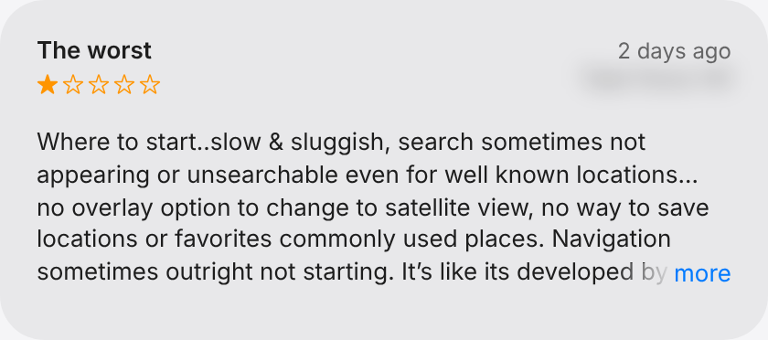
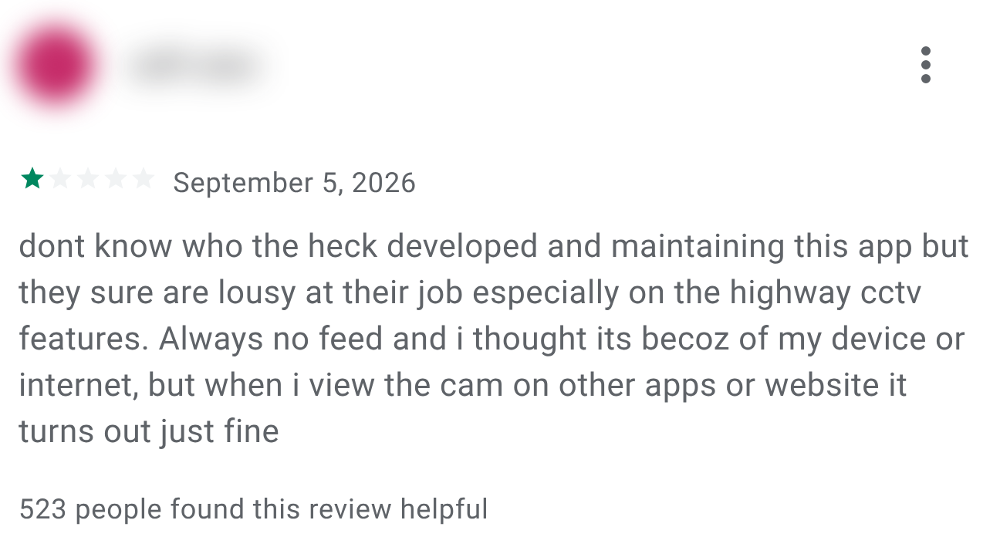
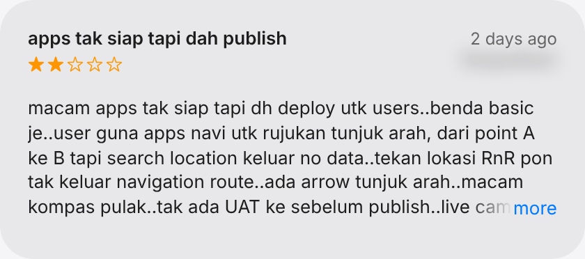
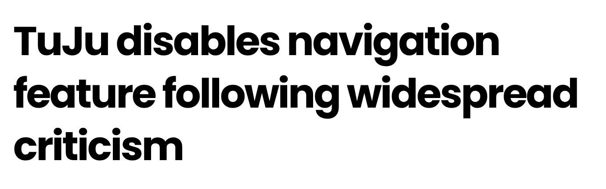
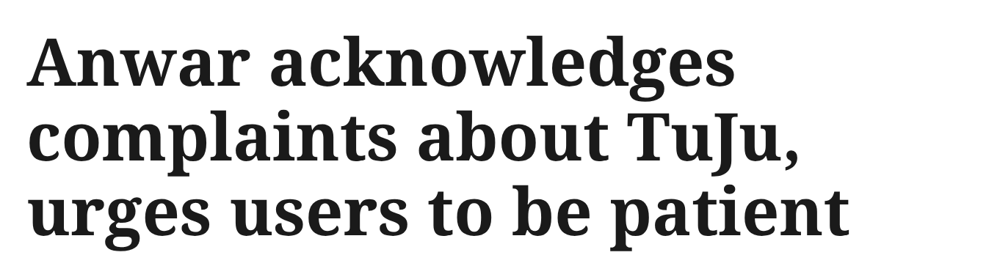

WAZE OUT. TUJU IN. 72 HOURS LATER.
The Waze replacement,
rated by Malaysians.
1.2Google Play
3.34K reviews
3.34K reviews
1.6App Store
937 ratings
937 ratings

APP STORE
GOOGLE PLAY
APP STORE

"Type ayam gepuk satu ayam pun tak keluar."App Store review · 21 Oct
"…guna tuju maybe tujuh hari sampai rumah"App Store review · 21 Oct
nifailScreenshots 23 Oct 2026 · names blurred